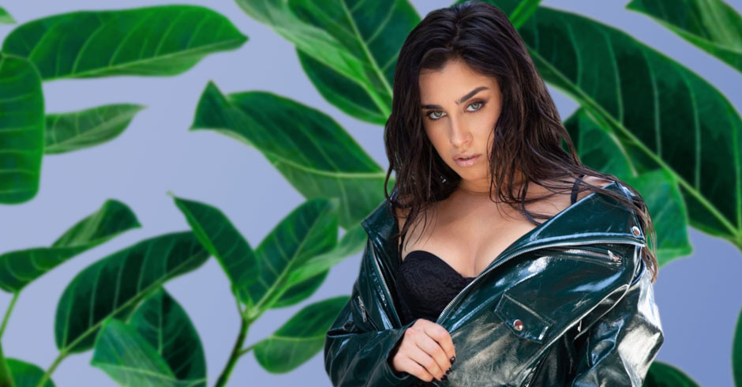

Lauren Michelle Jauregui Morgado (Miami, Florida; 27 de junio de 1996) es una cantante y compositora estadounidense.
Saltó a la fama como miembro del grupo de chicas Fifth Harmony, que se convirtió en uno de los grupos de chicas más vendidos de todos los tiempos. Jauregui comenzó a experimentar con diferentes sonidos y a explorar la composición de canciones en solitario, colaborando en canciones con Marian Hill, Steve Aoki y Camila Cabello
Comenzó a trabajar en música en solitario en mayo de 2018 y lanzó su canción debut como solista «Expectations» en octubre de 2018 bajo Columbia Records.
En enero del 2019, lanzó la canción «More Than That». Jauregui contribuyó con «Invisible Chains» a la banda sonora de la película Birds of Prey (2020) y lanzó la canción urbana latina producida por Tainy «Lento» en marzo de 2020. En abril de 2020, lanzó la canción «50ft». El EP debut en solitario de Jauregui, Prelude, se lanzó el 5 de noviembre de 2021.
